Ontbijt, koffie en een zoete zonde.
Huisgemaakt gebak, cinnamon buns om je vingers bij af te likken en een ontbijt voor wie niet kan kiezen. Een zaak van moeder en dochter, Daisy en Silke.
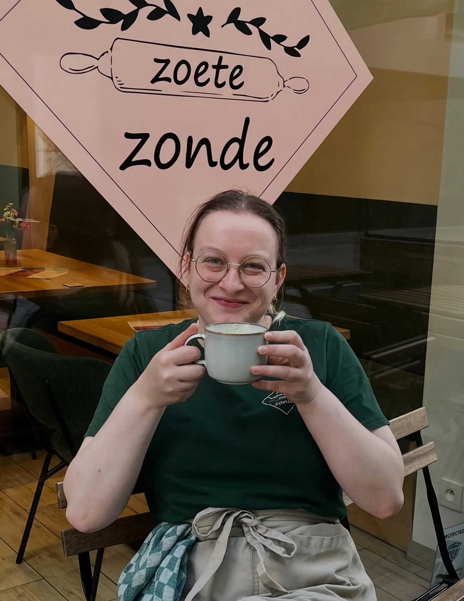
Mooie taartjes, en zoveel meer.
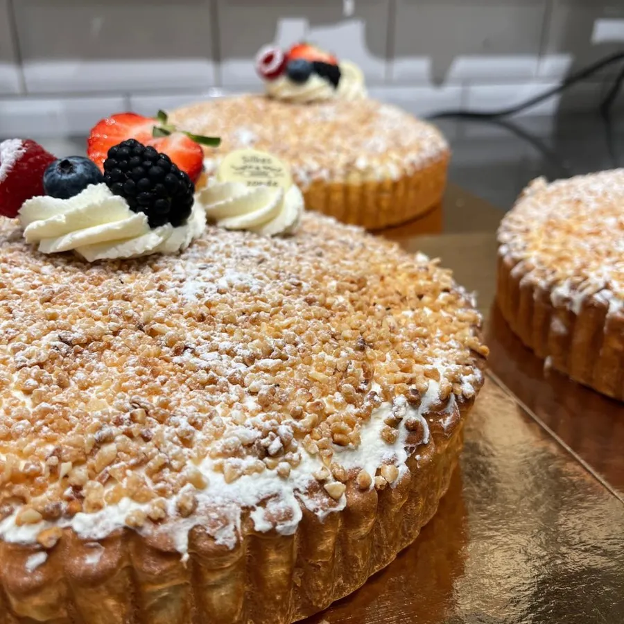
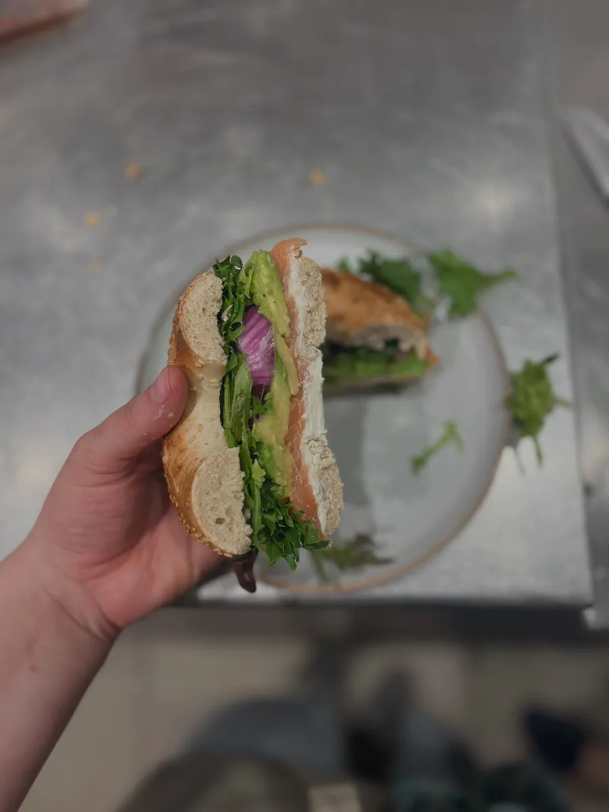
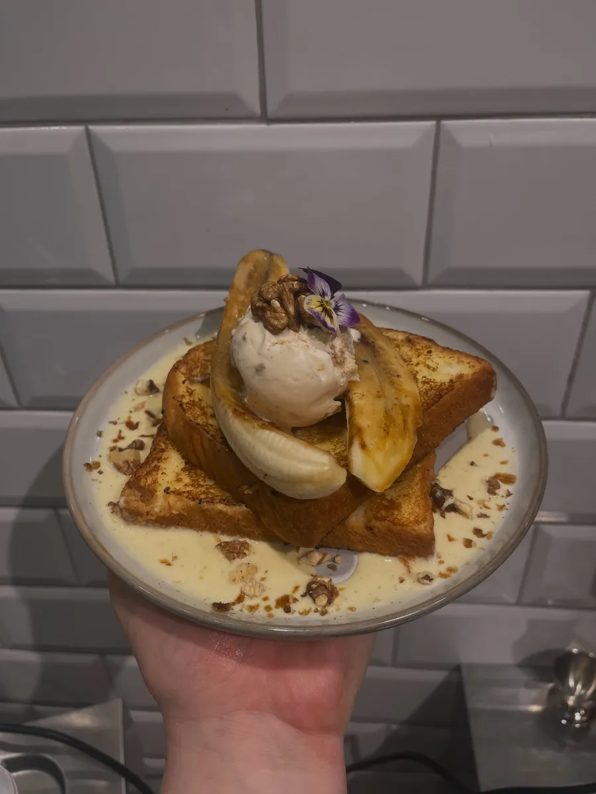
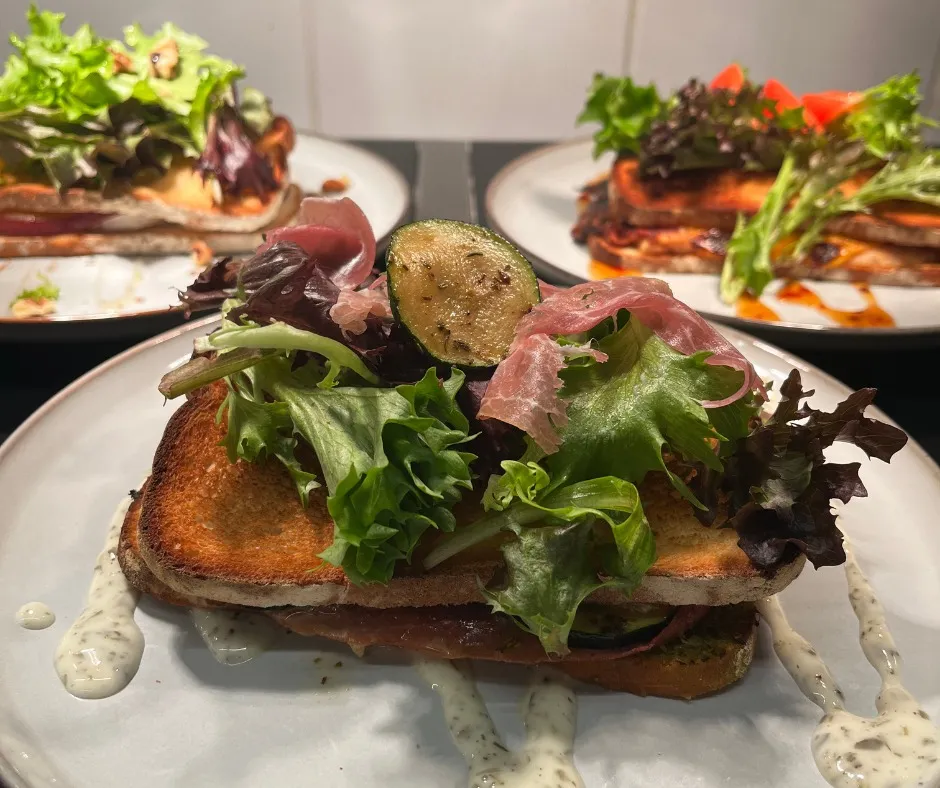
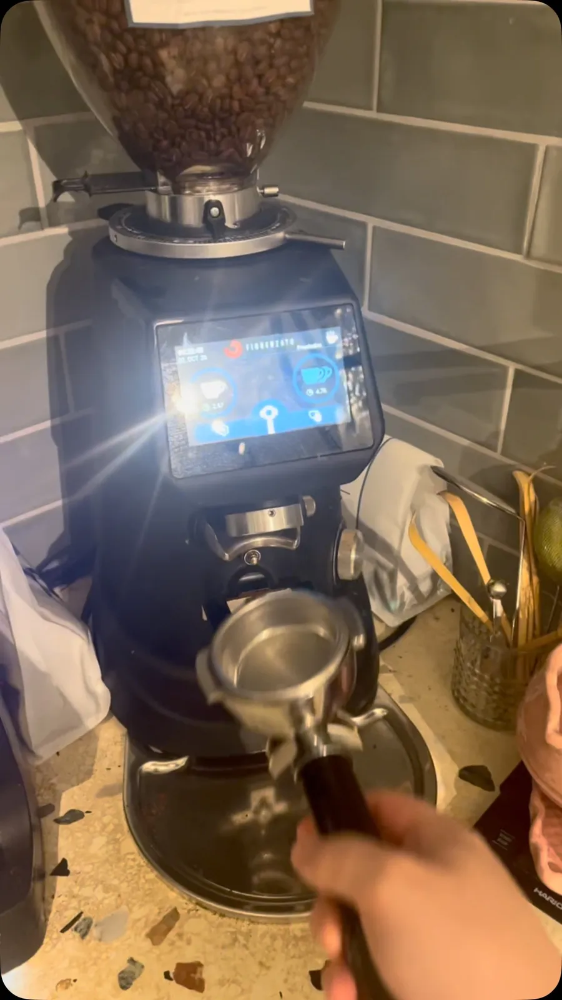
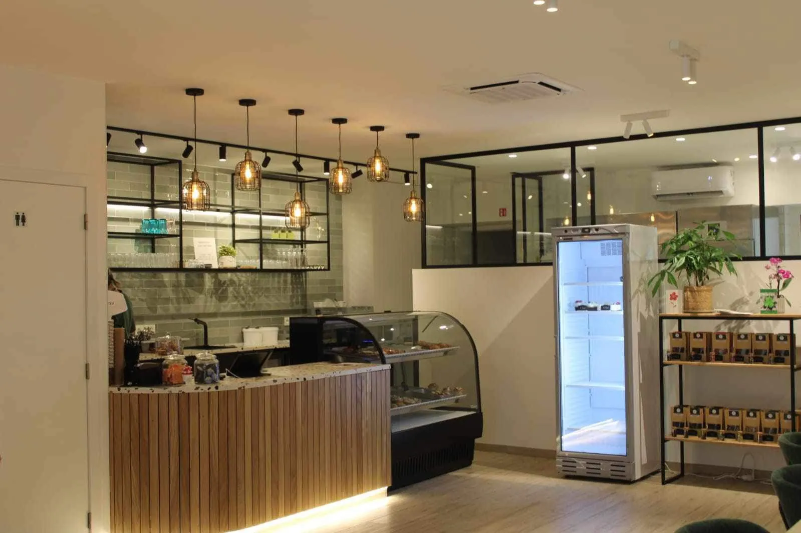
Wat er bij ons op tafel komt.
Choose your character ☕
Achter de toog staat een ploeg die je met een glimlach je cappuccino geeft. Wie je favoriet is, mag je zelf kiezen.
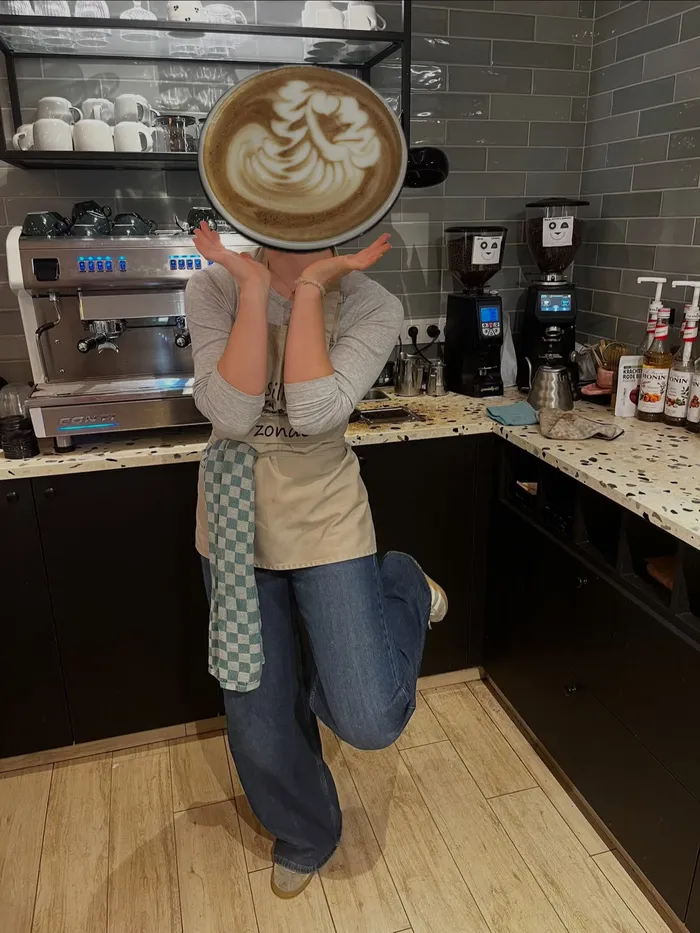
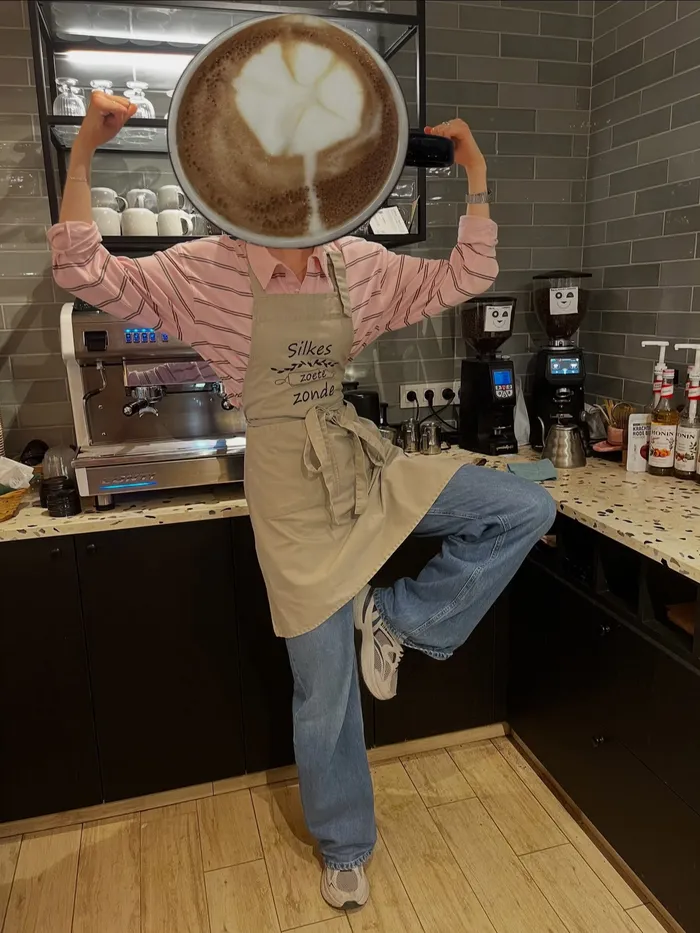
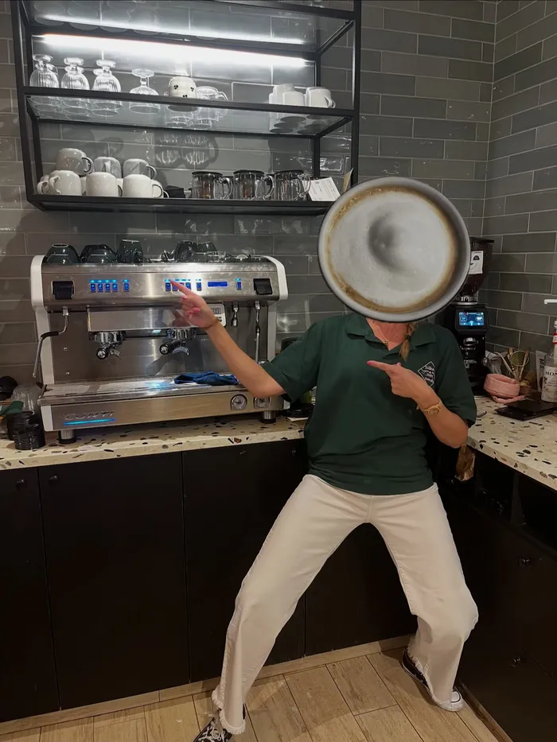
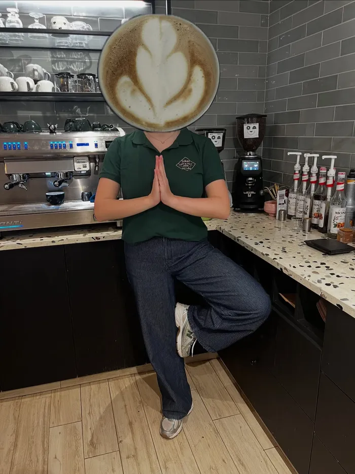
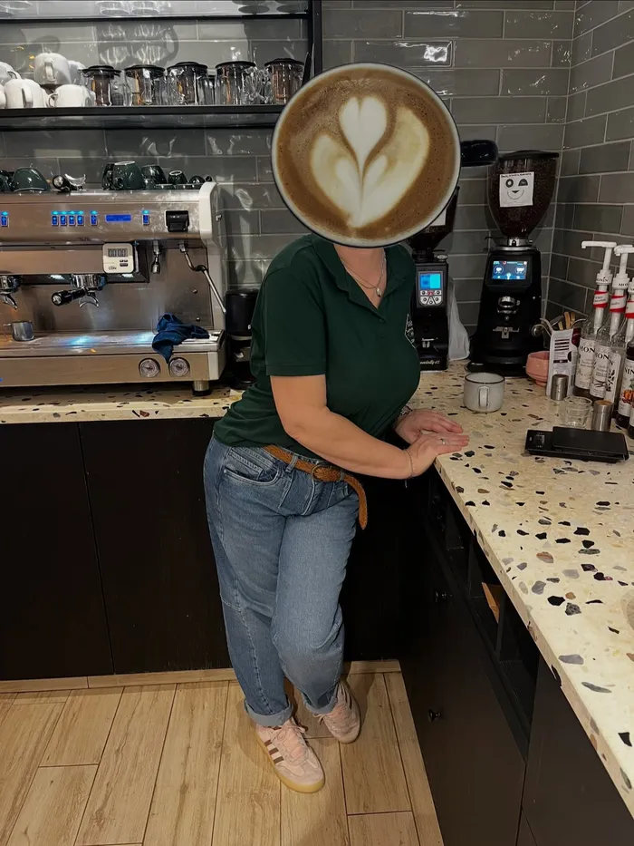
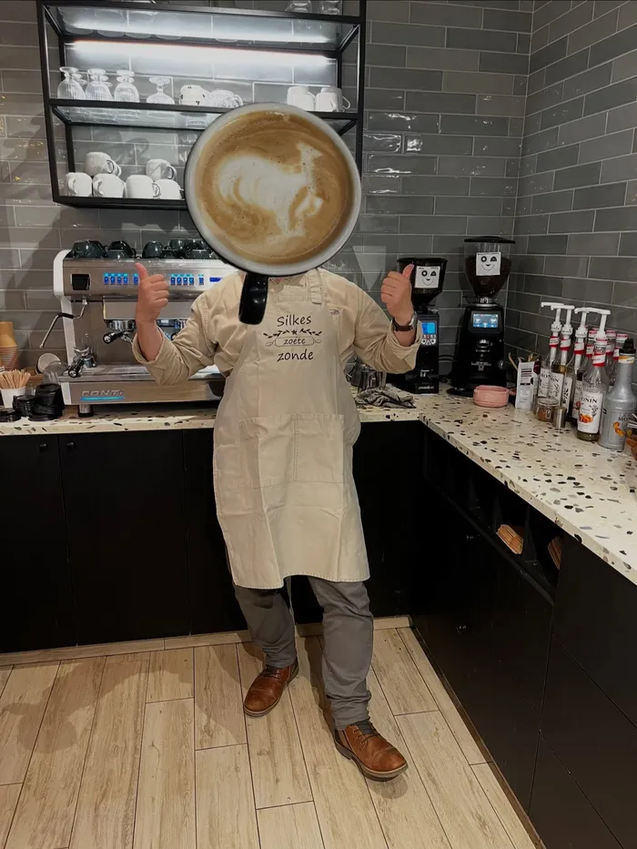
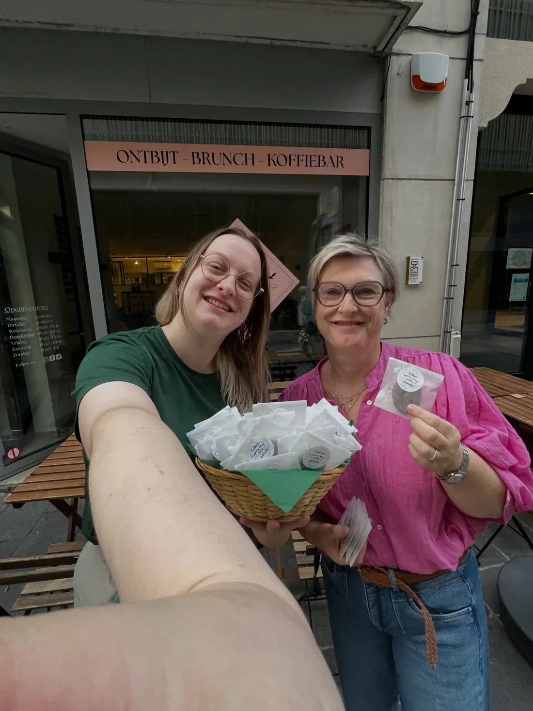
Van een atelier thuis naar de Wijngaardstraat.
Wij zijn Daisy en Silke. Ik, Silke, volgde de opleiding bakkerij aan Ter Groene Poorte in Brugge en begon in 2021 als student-ondernemer mijn eigen zaak.
Eerst bakte ik thuis in een klein atelier. Toen dat te klein werd, verhuisden we naar de Wijngaardstraat. Daar kan je nu gewoon binnenspringen.
"Prijs kwaliteit is TOP"
"We hebben heerlijk genoten van een verrukkelijk ontbijt. We namen "de twijfelaar". Verse producten, goede smaak, ruim voldoende en een streling voor het oog."natasha dalle · Google
"Super leuke coffee locatie, zeer goede cappuccino’s 🙏🙏 goede sfeer, service en ambiance. Gebak is uitermate lekker. Zeker een locatie voor ons om vaker te bezoeken. Prijs kwaliteit is TOP"Roy · Google
"Een supergezellig stekje met altijd wat lekkers in de aanbieding. Pannenkoeken voor mensen met een grote maag maar zelf als je een kleine eter bent kan je een kleinere pannenkoek krijgen. De cinnamon rolls zijn om je vingers bij af te lekken!"Niki Delporte · Google
Spring binnen in de Wijngaardstraat.
Wijngaardstraat 50
8500 Kortrijk
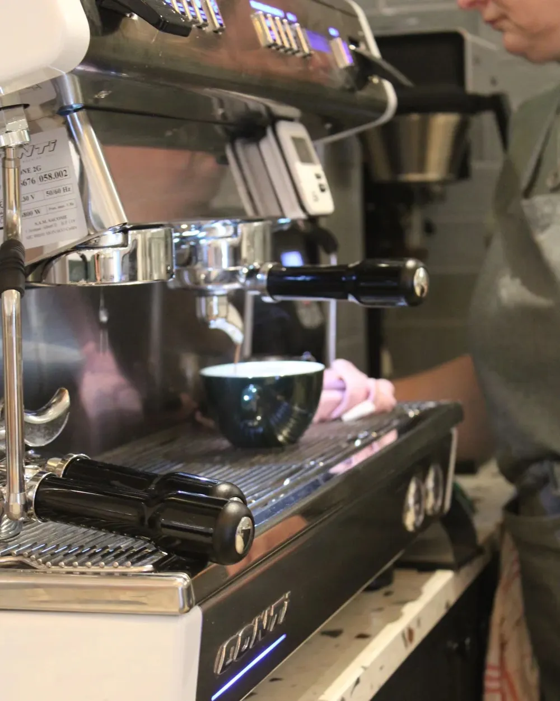
Ook op zondag open